2nd at NYC South Regionals
4th at NY State Tournament
Founded in 2011, Brooklyn Technical High School's Science Olympiad team has built itself up to be one of the best in New York State.
In Science Olympiad, teams of 15 students compete in a total of 23 events relating to science, technology, engineering, and math. At Brooklyn Tech, these events are split up into seven blocks, each specializing in three to four events, each with their own unique charm and passion for science. Each year, the team hosts summer meetings in order to prepare tryouts, which occur early in the school year, around October.
We hope to see you there, and best of luck!